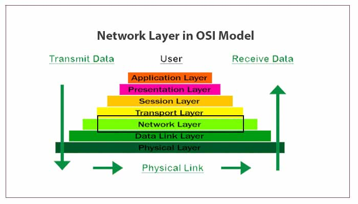

Each layer has its own specific function, and understanding how they interact with each other is key to understanding how data communication works.Those function and responsibility in ensuring reliable and efficient communication over a network. Understanding the layers helps us troubleshoot and maintain networks more effectively.
The Seven Layers of the OSI Model
| Layer | Number | Function | Description |
|---|---|---|---|
| Physical | 1 | Defines physical means of data transmission | Defines the physical means of data transmission, such as cables, radio waves, or fiber optics. |
| Data Link | 2 | Error-free transfer of data frames between two devices on the same network | Provides error-free transfer of data frames between two devices on the same network, such as Ethernet or Wi-Fi. |
| Network | 3 | Routes data between different networks | Routes data between different networks, including routing, addressing, and congestion control. |
| Transport | 4 | Ensures reliable data transfer between devices on different networks | Ensures reliable data transfer between devices on different networks, including error detection and correction. |
| Session | 5 | Establishes, maintains, and terminates connections between applications | Establishes, maintains, and terminates connections between applications, including dialog control and session management. |
| Presentation | 6 | Converts data into a format that can be understood by the receiving device | Converts data into a format that can be understood by the receiving device, including encryption and compression. |
| Application | 7 | Provides services to end-user applications | Provides services to end-user applications, such as email, file transfer, and web browsing. |